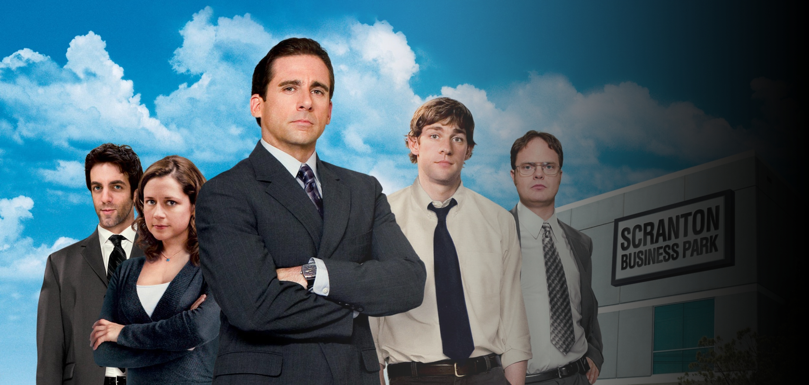

The Office es una comedia ambientada en una sucursal de la empresa Dunder Mifflin, dedicada a la venta de papel en Scranton, Pennsylvania. A través del estilo de falso documental, la serie narra las interacciones y relaciones cotidianas de los empleados, ofreciendo un vistazo a sus trabajos en diferentes departamentos como ventas, recursos humanos y contabilidad. La dinámica entre los personajes, junto con situaciones comunes del día a día, se convierte en el eje central de esta aclamada serie.